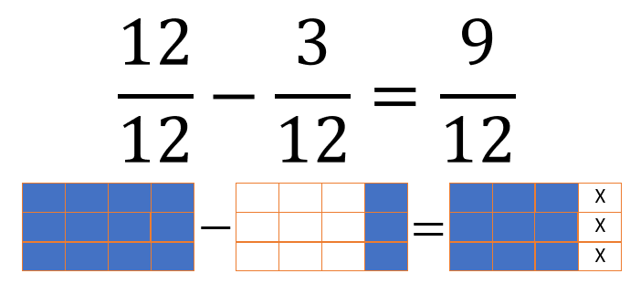
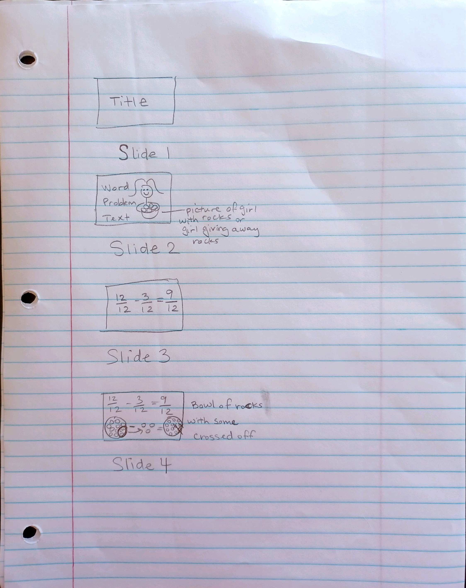

Do It! Google Slides: Show and Tell Fractions
 The Challenge
The Challenge
You are the expert. Use Google Slides to show what you know about adding or subtracting fractions. Choose a word problem to solve and illustrate. You will share how to write out and solve the mathematical equation. You will also create a visual fraction model or find pictures online to illustrate the word problem.
Project Steps
-
Choose a Word Problem
-
Solve the Problem
- Optional: Sketch Your Presentation
-
Create Your Google Slides Presentation
Choose a Word Problem
Choose one of these word problems to solve and present in your Google Slides presentation.
- Cobie baked a large vegetable pizza and cut it into 8 equal slices. She invited her brother Bobby to share it with her. She ate 3 slices. Bobby ate 2 slices. Cobie put the rest into the refrigerator. How much of the pizza did the kids eat?
- Brody brought a sub sandwich to school and cut it into 4 equal pieces. He ate 2 pieces for lunch and then 1 more piece after soccer practice. He planned to eat the rest as a snack when he got home. How much did he have left for his snack?
- Adelaide’s cats had a litter of 5 kittens. She decided to keep 1. Her neighbor Jeremy adopted 3 of them. How much of the litter still need homes?
Solve the Problem
Represent the word problem as a mathematical equation. Solve the equation. Then, represent the problem as a visual fraction model.
Example:
Sherry has a collection of 12 rocks. She gave away 3 of the 12 rocks. What fraction of her collection does she have left?

Optional: Sketch Your Presentation
It may help to sketch your presentation on paper before creating your Google Slides presentation. This way you can organize your thoughts ahead of time. Create a visual outline of how the slides can look with the visual fraction model.

Create Your Google Slides Presentation
Create slides with the word problem information, mathematical equation, and visual fraction model. You can organize it however you think would be best for your audience. Here is one suggestion:
- Slide 1: Start with a summary of the word problem. Remember: Less text can be clearer. Useful images can also be helpful.
- Slide 2: Represent the word problem with a mathematical equation. You can also include relevant images.
- Slide 3: Represent the word problem with a visual fraction model.